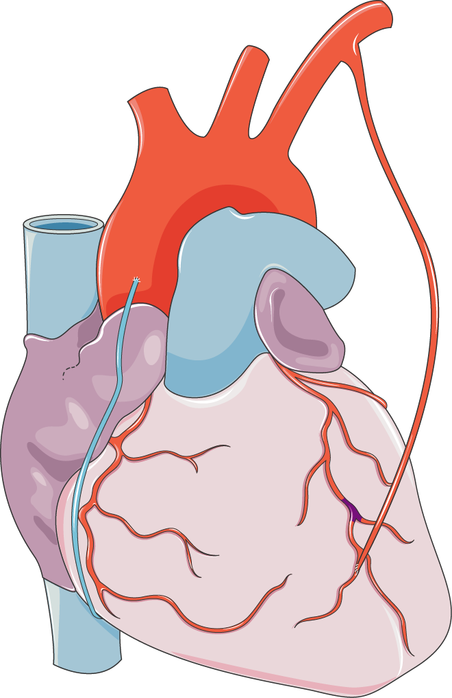
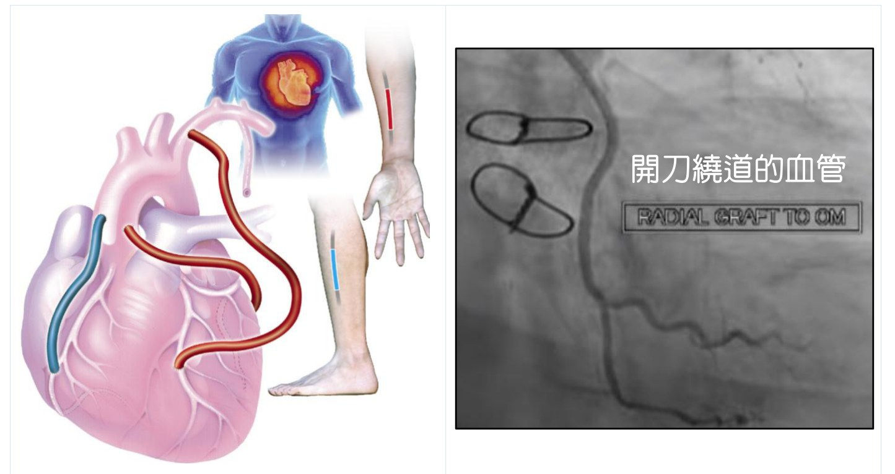

外科冠狀動脈繞道手術（CABG）
冠狀動脈繞道手術是利用病人自身其他部位的血管（例如腿部的大隱靜脈、胸壁的胸廓內乳動脈，或手臂的橈動脈），繞過心臟阻塞的部位，另外造一條新的血管通道，讓血流重新繞過阻塞處、恢復供應心臟——就像在塞車的路段旁，開通一條新的道路。繞道用的血管常用的「橋血管」包括胸廓內乳動脈（IMA）、大隱靜脈與橈動脈，取自病人自己的身體。


手術大致的過程
繞道手術需要全身麻醉，傷口位於胸部正中或左側胸，長度大約 8～15 公分，手術時間約 4～6 小時（視情況而定）。手術可以一次處理多條阻塞的血管，達到較完整的血流重建。
繞道手術的特點
能夠一次完整重建多條血管的血流，長期成效相對穩定持久；對某些病例（如三條血管或左主幹病變、合併糖尿病等）甚至能提升存活率。相對地，它是較大的手術，恢復期較長，住院天數也較久。